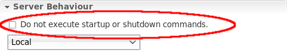

Server
Dont execute startup/shutdown commands
You may now tell the server adapter not to start/stop the server when you start/stop the server adapter. This will allow you to deploy to a server that you dont (want to) control.

Custom deploy folders for JBoss AS7
You can now use custom depoy folders when deploying to JBoss AS7.

AS7 Change of classpath container behaviour
In AS7, only the javax.* packages and jars are included in the classpath container. This is a change from previous AS versions, which put every jar in the distribution into the classpath container.
Browse files on a remote server
When editing the settings of a server adapter, you could not choose the the server home and the deployment directories of a remote server. We fixed that and now allow you to reach the filesystem on a remote server if you have the server set to Remote System Deployment.